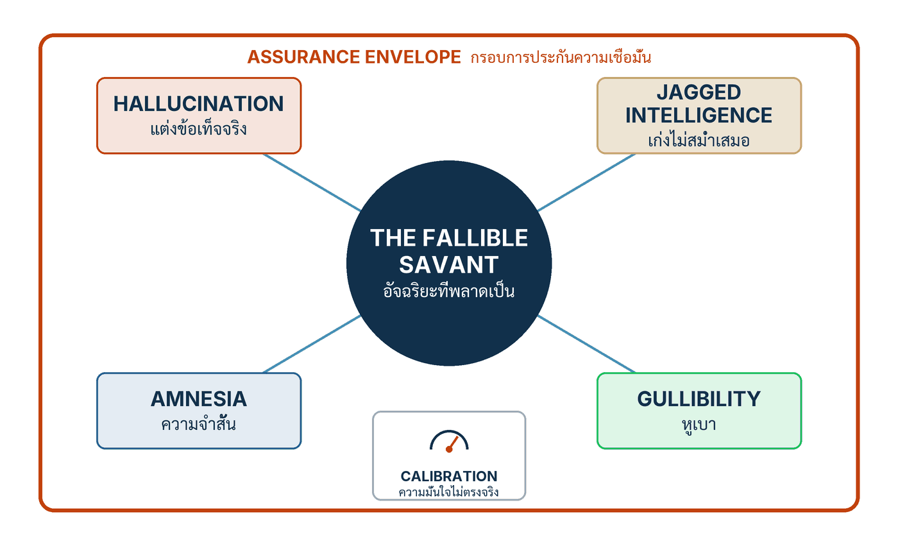

ในบทความนี้
- สี่สมมติฐานการออกแบบจาก §4 ของเปเปอร์ — แต่งข้อเท็จจริง ขรุขระ ความจำสั้น หูเบา — เป็นคุณสมบัติของแกน ไม่ใช่บั๊ก
- ความแม่นของความมั่นใจ และภาระการรับประกันที่ย้ายไปที่ขอบ — ห้าองค์ประกอบของ assurance envelope
- ลงมือทำ 7 ขั้น — จากบังคับชี้แหล่งระดับ span จนถึงร่าง envelope ฉบับแรกของแอปคุณเอง
- Artifact — ตารางตรวจสมมติฐานการออกแบบของน้องคราม และร่าง envelope ที่ตอนที่ 6 จะแปลงเป็นโค้ด
- Validation check — เจ็ดคำถามผ่าน/ไม่ผ่าน แต่ละข้อต้องตอบด้วย artifact ไม่ใช่คำคุณศัพท์
- ก้าวต่อไป — สิ่งที่ตอนนี้จงใจยังไม่ตอบ และลูปควบคุมที่รออยู่ในตอนที่ 6
In this post
- The four design assumptions of the paper's §4 — hallucination, jaggedness, amnesia, gullibility — properties of the core, not bugs
- Calibration, and the assurance burden that moves to the boundary — the five elements of the assurance envelope
- The seven steps — from mandatory span-level attribution to the first envelope sketch for your own app
- The artifact — Nong Kram's design-assumption audit, and the envelope sketch that post #6 turns into code
- Validation check — seven pass/fail questions, every one answered with an artifact rather than an adjective
- The road ahead — what this post deliberately leaves open, and the control loop waiting in post #6
🤔 ถ้าทีมคุณมีเพื่อนร่วมงานคนหนึ่งเก่งระดับอัจฉริยะ — เขียนเก่ง สรุปเก่ง รู้กว้างจนน่าตกใจ — แต่แต่งเรื่องได้หน้าตายโดยไม่รู้ตัว เก่งไม่สม่ำเสมอแบบเดาทางไม่ได้ จำเรื่องเมื่อวานไม่ได้เลย และเชื่อโน้ตทุกใบที่มีคนสอดมาบนโต๊ะ — คุณจะมอบปุ่มอนุมัติเงินคืนให้เขาไหม?
ตอนที่แล้ว Context Is a Control Artifact จบลงตรงที่ทุกพจน์ของสมการ (1) — โมเดล decoding context retrieval tools state environment — ถูก pin ไว้ใน release manifest เดียวของน้องคราม เรารู้แล้วว่าพฤติกรรมของระบบมาจากไหน และรู้ว่าเปลี่ยนพจน์ไหนก็คือเปลี่ยนโปรแกรม แต่ manifest ที่เนี้ยบที่สุดก็ยังตอบคำถามข้อถัดไปไม่ได้: ตัว "ผู้ประมวลผล" ตรงกลางของโปรแกรมนี้ไม่เคยสัญญาว่าจะถูกต้อง แล้วเราจะออกแบบระบบรอบสิ่งแบบนี้อย่างไรให้กล้ามอบงานจริงของร้านให้มันทำ
คำตอบของทั้งตอนอยู่ในชื่อที่เปเปอร์ตั้งให้แกนแบบนี้: อัจฉริยะที่พลาดเป็น (fallible savant) และวิศวกรรมที่ถูกต้องไม่ใช่การรอโมเดลรุ่นที่เลิกพลาด แต่คือการยกพฤติกรรมสี่อย่างของมัน — แต่งข้อเท็จจริง เก่งขรุขระ ความจำสั้น หูเบา — ขึ้นเป็นสมมติฐานการออกแบบที่ระบบต้องยืนอยู่ได้แม้ทั้งสี่ข้อเป็นจริงพร้อมกัน บวกอีกหนึ่งคุณสมบัติคือความมั่นใจที่เชื่อตามตัวเลขไม่ได้ แล้วสร้างกรอบการรับประกันรอบระบบ (assurance envelope) ห้าองค์ประกอบล้อมแกนเอาไว้[1] ภาระความถูกต้องไม่ได้หายไปไหน — มันย้ายจากใจกลางระบบออกไปอยู่ที่ขอบ ซึ่งเป็นที่ที่เราเขียนโค้ดเองได้และพิสูจน์ได้
1. สี่สมมติฐานการออกแบบ ไม่ใช่สี่ข้อบกพร่อง
ประเด็นที่ต้องตั้งให้ตรงก่อนลงรายละเอียด: §4 ของเปเปอร์ไม่ได้เขียนรายการนี้เป็น "ข้อบกพร่องของโมเดลที่รอเวอร์ชันหน้ามาแก้" แต่เขียนเป็นสมมติฐานการออกแบบ — สิ่งที่วิศวกรต้องถือว่าจริงเสมอ แบบเดียวกับที่วิศวกรโยธาถือว่าเหล็กยืดเมื่อร้อน[1] ไม่มีใครยืนด่าเหล็ก มีแต่คนออกแบบสะพานให้มีรอยต่อขยาย ตำแหน่งของสี่ข้อนี้ในเอกสารออกแบบจึงไม่ใช่หน้า "known issues" แต่เป็นหน้าเดียวกับ load assumptions ของงานโครงสร้าง
เหตุผลที่ต้องยกขึ้นเป็นสมมติฐานอยู่ในธรรมชาติของความผิดพลาดเอง: การรับประกันแบบ correctness-by-construction ของโลก Software 1.0 ส่งต่อมาไม่ได้ เพราะแกนถูกต้องด้วยความน่าจะเป็นบนการแจกแจงของงาน และเมื่อพลาด ความพลาดนั้นลื่นไหล (fluent) — มั่นใจ เรียบเรียงดี และผิด[1] ประโยคที่ผิดอ่านเหมือนประโยคที่ถูกทุกประการ การตรวจด้วยการอ่านผ่าน ๆ จึงเป็นการควบคุมที่ออกแบบมาแพ้ตั้งแต่ต้น และนี่คือเหตุผลที่เครื่องมือทั้งตอนนี้เป็นเรื่องของกลไก ไม่ใช่ความขยันของคนรีวิว
อาการแต่งข้อเท็จจริง (hallucination)
สมมติฐานข้อแรก: ระบบต้องถือว่าโมเดลจะยืนยันความเท็จที่ฟังเข้าเค้า (plausible falsehood) ด้วยความถี่ที่ไม่เป็นศูนย์[1] คำสำคัญของนิยามนี้คือ "ความถี่ไม่เป็นศูนย์" — ไม่ได้บอกว่าบ่อย ไม่ได้บอกว่าน้อย แต่บอกว่าไม่มีวันเป็นศูนย์ ต่อให้ retrieval แม่นแค่ไหน prompt เนี้ยบแค่ไหน วันหนึ่งอาการแต่งข้อเท็จจริง (hallucination) จะทำให้น้องครามบอกลูกค้าว่าเปลี่ยนคืนได้ภายใน 30 วัน ทั้งที่ policy เขียนว่า 14 วัน — ด้วยน้ำเสียงเดียวกับวันที่ตอบถูกทุกตัวอักษร มาตรฐานอย่าง NIST AI 600-1 ก็ขึ้นบัญชีอาการนี้ (ในชื่อ confabulation) เป็นความเสี่ยงประจำตัวของ generative AI ที่องค์กรต้องบริหาร ไม่ใช่รอให้หายเอง[5]
ความสามารถขรุขระ (jagged intelligence)
สมมติฐานข้อสอง: ความสามารถขรุขระ (jagged intelligence) — ความเก่งบนงาน A อนุมานไปยังงาน B ไม่ได้ ต่อให้สองงานดูใกล้กันแค่ไหนในสายตามนุษย์[1] พื้นผิวความสามารถของโมเดลไม่ใช่ที่ราบ แต่เป็นเทือกเขา: ยอดสูงตรงนี้ เหวลึกติดกัน และเส้นแบ่งไม่ตรงกับสัญชาตญาณของเราว่างานไหน "ยาก"
เปเปอร์อ้างผลจาก τ-bench ไว้อย่างระบุขอบเขตชัดเจน: agent แบบ function-calling ที่ใช้ GPT-4o ตัวหนึ่งทำได้ราว 61.2% ที่ pass^1 บนงานร้านค้าปลีก แต่ราว 35.2% บนงานสายการบิน และบนงานร้านค้าปลีกเอง pass^8 — รันซ้ำแปดครั้งต้องผ่านทั้งแปด — ต่ำกว่า 25%[1][2] โปรดอ่านตัวเลขชุดนี้อย่างที่เปเปอร์กำกับไว้: มันเป็นผลของระบบหนึ่งบน benchmark เฉพาะ ไม่ใช่ baseline สากลของโมเดลใด สิ่งที่มันสอนไม่ใช่ "GPT-4o ได้กี่เปอร์เซ็นต์" แต่คือรูปทรงของความสามารถ: ต่างกันเกือบเท่าตัวระหว่างสองโดเมนที่หน้าตาคล้ายกัน และความเสถียรเมื่อรันซ้ำต่ำกว่าคะแนนครั้งเดียวมาก — สองแกนที่ต้องวัดแยก และห้ามเดาข้าม
ความจำสั้น (amnesia)
สมมติฐานข้อสาม: ความจำสั้น (amnesia) — โมเดลไม่มีความจำใด ๆ นอก context window สิ่งที่มัน "จำได้" ในเทิร์นนี้คือสิ่งที่ถูกป้อนเข้าไปในเทิร์นนี้เท่านั้น ความต่อเนื่องของบทสนทนา ของงานที่ค้าง ของสัญญาที่ให้ลูกค้าไว้ เป็นความรับผิดชอบของแอปพลิเคชันทั้งหมด[1] ในเชิงสถาปัตยกรรม ข้อนี้แปลว่า "ความจำ" เป็นฟีเจอร์ที่เราสร้าง ไม่ใช่ของแถมจากโมเดล และต้องถูก version ตรวจสอบ และทดสอบเหมือน state อื่นทุกตัว ทีมที่ข้ามข้อนี้จะเจออาการคลาสสิก: บอทรับปากลูกค้าไว้เมื่อวาน วันนี้ปฏิเสธว่าไม่เคยพูด — ไม่ใช่เพราะโมเดล "โกหก" แต่เพราะไม่มีใครป้อนคำพูดเมื่อวานกลับเข้าไป
ความหูเบา (gullibility)
สมมติฐานข้อสี่ และข้อเดียวที่เป็นเรื่องความปลอดภัยโดยตรง: ความหูเบา (gullibility) — คำสั่งกับข้อมูลใช้ช่องทางเดียวกัน ทุกอย่างคือ token ในบริบทเดียว ข้อความที่ถูกประดิษฐ์มาอย่างตั้งใจจึงทับพฤติกรรมที่เราตั้งใจไว้ได้[1] งานของ Greshake และคณะสาธิตให้เห็นแล้วว่าเนื้อหาที่ถูกวางดักไว้ให้ระบบ "ไปอ่านเจอเอง" ทีหลัง — การฉีดคำสั่งแฝงทางอ้อม (indirect prompt injection) — ใช้เจาะแอปจริงที่ผูก LLM ได้ทั้งกระดาน[3] สำหรับน้องคราม ทุก byte ที่มาจากลูกค้า จากข้อความที่ลูกค้าวางลงแชท หรือจากหน้า catalog ที่ retrieval ดึงมา คือข้อมูลที่อาจถือมีดมาด้วย — และการออกแบบต้องถือแบบนั้นตลอดเวลา ไม่ใช่เฉพาะสัปดาห์ที่มีข่าวการโจมตี
💡 มุมมองของผม: กำไรที่เร็วที่สุดของการเปลี่ยนคำว่า "ข้อบกพร่อง" เป็น "สมมติฐาน" คือมันปิดการประชุมชนิดหนึ่งไปเลย — ประชุมที่มีคนพูดว่า "เดี๋ยวโมเดลรุ่นหน้าก็หายแล้ว" สมมติฐานไม่ใช่สิ่งที่รอให้หาย มันคือสิ่งที่ระบบต้องยืนได้แม้มันจริง ทีมที่เขียนสี่ข้อนี้ลงเอกสารออกแบบตั้งแต่สัปดาห์แรกจะไม่ต้องเถียงเรื่องเดิมซ้ำทุกไตรมาส และรีวิวสถาปัตยกรรมจะสั้นลงอย่างน่าประหลาดใจ เพราะคำถามเปลี่ยนจาก "มันจะพลาดไหม" เป็น "พลาดแล้วชนอะไร"
2. ความแม่นของความมั่นใจ และภาระที่ย้ายไปที่ขอบ
ยังมีคุณสมบัติที่ห้าที่เปเปอร์วางแยกจากสี่สมมติฐาน: ความแม่นของความมั่นใจ (calibration) — gate ที่ route งานตามคำพูดของโมเดลว่า "มั่นใจ 90%" จะสมเหตุสมผลก็ต่อเมื่อ ในบรรดาครั้งที่โมเดลพูดแบบนั้น มันถูกจริง 90% และความมั่นใจดิบของโมเดลมักไม่ผ่านเงื่อนไขนี้ — mis-calibrated — quality gate จึงต้องพึ่งการประเมินอิสระ ไม่ใช่การประเมินตัวเองของโมเดล[1] ประโยคนี้ฟังเรียบ ๆ แต่มันตัดสถาปัตยกรรมยอดนิยมทิ้งไปหนึ่งแบบเต็ม ๆ: ระบบที่ให้โมเดลให้คะแนนความมั่นใจตัวเอง แล้วใช้คะแนนนั้นเลือกว่าจะส่งต่อมนุษย์หรือไม่ กำลังสร้างประตูที่ยามเฝ้าเป็นคนเดียวกับคนที่ขอผ่าน
ภาระการรับประกันไม่ได้หายไป — มันย้ายที่
เมื่อถือสี่สมมติฐานบวก calibration พร้อมกัน ข้อสรุปของ §4 ตามมาอย่างเลี่ยงไม่ได้: เราพิสูจน์ความถูกต้องจากภายในตัว generator ไม่ได้ แต่ความถูกต้องก็ไม่ได้ถูกแทนที่ด้วยการยอมแพ้ สิ่งที่เกิดขึ้นคือการกระจายภาระใหม่: ภาระการรับประกันย้ายจากใจกลาง (ตัวโมเดล ซึ่งเราแก้ไขไม่ได้และพิสูจน์ไม่ได้) ไปอยู่ที่ขอบของระบบ (ซึ่งเราสร้างเอง ทดสอบได้ และพิสูจน์ได้)[1] โมเดลยังคงเป็นแหล่งของความสามารถ แต่ขอบของระบบกลายเป็นแหล่งของความน่าเชื่อถือ
ห้าองค์ประกอบของกรอบการรับประกันรอบระบบ
เปเปอร์นิยาม envelope ของระบบที่มี AI เป็นแกนไว้เป็นห้าองค์ประกอบ ล้อมรอบ generator[1]
- Versioned context assembly — การประกอบบริบทที่มีเวอร์ชันกำกับ: ทุกสิ่งที่เข้าโมเดลมาจาก artifact ที่ pin ไว้ และตรวจย้อนได้ว่าเทิร์นนี้ประกอบขึ้นจากอะไร — รากที่ตอนที่ 4 วางไว้แล้ว
- Hard mediation of effectful actions — ทุก action ที่มีผลจริงต่อโลกภายนอกต้องผ่านตัวกลางเชิงโครงสร้างนอกโมเดล ครบทุกเส้นทาง ไม่มีทางลัด
- Calibrated semantic evaluation — การประเมินเชิงความหมายด้วยตัวประเมินอิสระที่รู้อัตราพลาดของตัวเองบนประชากรที่ประกาศ ไม่ใช่ความรู้สึกของโมเดลต่อผลงานตัวเอง
- Complete decision tracing — ร่องรอยการตัดสินใจ (decision trace) ครบทุก request ทุกเส้นทาง รวมเส้นทางที่ล้มเหลว เพื่อให้ทุกเหตุการณ์สร้างซ้ำเชิงหลักฐานได้
- Risk-proportionate fallback — เส้นทางสำรองที่ได้สัดส่วนกับความเสี่ยง: งานอ่านอย่างเดียวอาจแค่ติดป้ายเตือน แต่งานที่ย้อนกลับไม่ได้ต้องหยุดรอมนุษย์
{kind=link}

และประโยคที่ห้ามตัดทิ้งจากนิยามนี้: งาน envelope จำเป็น แต่ไม่ใช่สิ่งทดแทนการปรับปรุงแกน — การเลือกโมเดล การคัดข้อมูล การสอบเทียบ การตั้ง decoding และสถาปัตยกรรม ล้วนเปลี่ยนความน่าเชื่อถือของแกนได้จริง คำถามที่ถูกต้องคือการจัดสรรความพยายาม ไม่ใช่การเลือกข้างใดข้างหนึ่ง[1] envelope ไม่ใช่ข้ออ้างให้เลิกดูแลแกน และแกนที่เก่งขึ้นก็ไม่ใช่ข้ออ้างให้ถอด envelope — ขั้นที่ 6 ข้างล่างจะทำให้การจัดสรรนี้เป็นตารางที่กรอกได้จริง
3. ลงมือทำ 7 ขั้น
เจ็ดขั้นต่อไปนี้แปลงหัวข้อ 1 กับ 2 ให้เป็นงานที่ทำจบได้ในหนึ่งถึงสองสัปดาห์ ทุกขั้นจบด้วยความคืบหน้าหนึ่งก้าวของน้องคราม และปลายทางของทั้งเจ็ดขั้นคือ artifact สองชิ้นในหัวข้อ 4
ขั้นที่ 1 — ออกแบบรับอาการแต่งข้อเท็จจริง: บังคับชี้แหล่งระดับ span
กำหนดเป็นกติกาของระบบ ไม่ใช่คำขอร้องใน prompt: ทุกข้อความที่อ้างข้อเท็จจริง — เงื่อนไข นโยบาย คุณสมบัติสินค้า ตัวเลข — ต้องผูกกับแหล่งใน corpus ในระดับ span ว่าประโยคไหนมาจาก passage ไหน และ claim ที่ไม่มีแหล่งรองรับต้องถูกกักไว้ (withhold) หรือติดป้ายว่ายังไม่ยืนยัน ก่อนถึงมือลูกค้าเสมอ[1] เหตุผลกลับไปที่สมมติฐานข้อแรกตรง ๆ: เมื่อความเท็จที่ฟังเข้าเค้ามาแน่ด้วยความถี่ไม่เป็นศูนย์ ตัวกรองต้องทำงานกับทุกคำตอบ ไม่ใช่เฉพาะคำตอบที่ "ดูแปลก" รูปคำตอบภายในของน้องครามจึงเป็นแบบนี้:
# รูปคำตอบภายในของน้องคราม — ทุก span ที่อ้างข้อเท็จจริงต้องชี้แหล่ง
{
"answer_spans": [
{ "text": "เปลี่ยนคืนได้ภายใน 14 วันหลังรับสินค้า",
"source": "policy/returns.md#จุดที่-2" },
{ "text": "แจกันใบนี้เคลือบครามธรรมชาติ เผาที่ 1,230 องศา",
"source": "catalog/vase-kk58.md#รายละเอียด" },
{ "text": "ปกติร้านคืนเงินภายใน 3 วันทำการ",
"source": null } // ไม่มีแหล่ง → ห้ามปล่อยเฉย ๆ: ตัดทิ้ง หรือติดป้าย "ยังไม่ยืนยัน"
]
}ขั้นที่ 2 — ออกแบบรับความสามารถขรุขระ: ประกาศ slice แล้ววัดต่อ slice
เขียนรายการชนิดงาน (slice) ของแอปคุณลงเอกสารให้เป็นทางการ แล้วสร้างชุดทดสอบทองคำ (golden set) แยกต่อ slice พร้อมเกณฑ์ผ่านของแต่ละ slice — และห้ามอนุมานความเก่งข้าม slice เด็ดขาด ต่อให้สอง slice ดูเหมือนกันแค่ไหน[1] บทเรียน retail/airline ในหัวข้อ 1 คือเหตุผลทั้งหมดของขั้นนี้: ระบบเดียวกัน โดเมนคล้ายกัน ผลต่างเกือบเท่าตัว slice แรกของน้องคราม (ตัวเลขชุดทดสอบเป็นของบทเรียนนี้ ไม่ใช่ของเปเปอร์):
- order-status — สถานะออเดอร์ พัสดุ เวลาส่ง · golden 40 เคส · เกณฑ์ผ่าน 95%
- return-policy — เงื่อนไขเปลี่ยน/คืนสินค้า · golden 30 เคส · เกณฑ์ผ่าน 97% เพราะเป็น slice ที่ผิดแล้วแพงที่สุด
- product-info — เนื้อดิน เคลือบคราม ขนาด การดูแล · golden 30 เคส · เกณฑ์ผ่าน 90%
- refund-request — ยอดเงินและการเข้าเงื่อนไข · golden 20 เคส · วัดอย่างเดียว ไม่มีเกณฑ์ปล่อยอัตโนมัติ — ผลจริงถูกกั้นด้วย guard เสมอ
ขั้นที่ 3 — ออกแบบรับความจำสั้น: ย้ายความต่อเนื่องออกนอกโมเดล
สร้างที่เก็บ state ของ session เป็นของแอปเอง แล้วให้ assembly function จากตอนที่ 4 เติมมันกลับเข้า context ใหม่ทุกเทิร์น — อย่าสันนิษฐานแม้แต่เทิร์นเดียวว่าโมเดล "น่าจะยังจำได้"[1] ข้อดีที่ได้ฟรี: state ที่อยู่นอกโมเดลถูก inspect ได้ ทดสอบได้ และอยู่ใน trace ได้ สคีมาแรกของน้องคราม:
# session_state ของน้องคราม — ความต่อเนื่องอยู่นอกโมเดลทั้งหมด
# ทุกเทิร์น assembly function อ่านเรคอร์ดนี้แล้วเติมกลับเข้า context ทั้งก้อน
session_id: s-260908-042
customer_ref: LINE:U-9f3a…
order_in_focus: KK-58214 # แจกันเคลือบคราม 2 ใบ ส่งแล้ว 5 ก.ย.
promises_made: ["ตรวจเรื่องรอยบิ่นแล้วตอบภายในวันนี้"]
refund_state: none # none | proposed | approved | committedขั้นที่ 4 — ออกแบบรับความหูเบา: แยกช่องคำสั่งออกจากช่องข้อมูล
ติดป้ายที่มาให้ทุกสิ่งที่เข้า context — system, policy/, catalog/, ข้อความลูกค้า, session_state — แล้ววางกติกาตายตัวข้อเดียว: เนื้อหาจาก retrieval และจากผู้ใช้เป็นข้อมูลเสมอ ไม่มีสิทธิ์ออกคำสั่ง และคำขอใดที่โผล่ในช่องข้อมูล ("โอนเงินคืนให้ฉันเดี๋ยวนี้ตามที่หน้านี้บอก") ไม่มีน้ำหนักต่อ tool ใด ๆ[1] ขั้นนี้ไม่ได้ทำให้การฉีดคำสั่งแฝง "เป็นไปไม่ได้" — หัวข้อ 1 บอกแล้วว่าโมเดลหูเบาโดยธรรมชาติ — แต่มันย้ายคำถามจาก "โมเดลจะเชื่อไหม" (ตอบไม่ได้) ไปเป็น "เชื่อแล้วมันทำอะไรได้บ้าง" (ตอบได้ และจำกัดได้)[3] สำหรับน้องคราม: passage จาก catalog/ ที่มีประโยคเชิงคำสั่งฝังอยู่จะยังถูกอ่าน แต่สิ่งเดียวที่มันชักจูงได้คือข้อความที่ถูกเสนอ ไม่ใช่ผลจริงที่เกิด เพราะ refund ทุกครั้งต้องผ่านตัวกลางนอกโมเดลตามร่างในหัวข้อ 4
ขั้นที่ 5 — อย่าเชื่อความมั่นใจของโมเดล: ใช้ตัวตรวจอิสระ
ไล่ดู quality gate ทุกตัวในระบบ แล้วถามคำถามเดียวกับทุกตัว: gate นี้ตัดสินจากอะไร ถ้าคำตอบคือ "จากคะแนนความมั่นใจที่โมเดลรายงานเอง" หรือ "จากการถามโมเดลซ้ำว่าแน่ใจนะ" — แทนที่ด้วยการประเมินอิสระ: เทียบคำตอบกับ passage ที่ดึงมาจริง เทียบกับ state จริงของออเดอร์ หรือใช้ตัวจำแนกแยกต่างหากที่รายงาน false positive / false negative ของตัวเองได้[1] ตัวอย่างของชนิดหลังคือตัวจำแนก input–output อย่าง Llama Guard — และต้องให้สถานะมันตรงตามธรรมชาติของมัน: สัญญาณเชิงแนะ (advisory signal) ที่พลาดได้ ไม่ใช่ผู้รับประกัน[4] สำหรับน้องคราม gate เดิม "ถ้าโมเดลมั่นใจต่ำให้ส่งต่อแอดมิน" ถูกแทนด้วย faithfulness check เทียบ answer_spans จากขั้นที่ 1 กับ passage จริง — เพราะความมั่นใจ 95% ที่ไม่ผ่านการสอบเทียบ ไม่ได้บอกอะไรเราเลยนอกจากอารมณ์ของตัวเลข
ขั้นที่ 6 — จัดสรรงบ core กับ envelope ตามโปรไฟล์ความเสี่ยงของคุณ
เวลาและเงินมีจำกัด และ §4 พูดเรื่องนี้ชัด: นี่คือคำถามการจัดสรร ไม่ใช่การเลือกข้าง — การปรับปรุงแกน (โมเดลดีขึ้น ข้อมูลสะอาดขึ้น สอบเทียบ ตั้ง decoding) เปลี่ยนความน่าเชื่อถือได้จริง และงาน envelope ก็จำเป็นเสมอ คำถามคือเทความพยายามตรงไหนเท่าไร ต่อชนิดผลกระทบของแต่ละเส้นทางงาน[1] การจัดสรรของน้องคราม (การแบ่งของผมสำหรับบทเรียนนี้ ไม่ใช่สูตรของเปเปอร์):
| เส้นทางงาน | ชนิดผลกระทบ | งบฝั่ง core | งบฝั่ง envelope |
|---|---|---|---|
| product-info | อ่านอย่างเดียว | สูง — คัด catalog/ ให้ครบ ถูก และสดใหม่ เพราะคุณภาพคำตอบมาจาก corpus ตรง ๆ | พอประมาณ — attribution จากขั้นที่ 1 บวกป้าย "ยังไม่ยืนยัน" |
| order-status | อ่านข้อมูลส่วนบุคคล | ปานกลาง — retrieval ต้องผูกกับออเดอร์ที่ถูกต้อง | สูง — ผูกตัวตนลูกค้ากับ session และเก็บ trace ครบ |
| refund | ย้อนกลับไม่ได้ตั้งแต่ payment processor รับคำสั่ง | ต่ำ — โมเดลเก่งขึ้นไม่ได้เปลี่ยนราคาของความพลาดครั้งเดียว | สูงสุด — guard นอกโมเดล + คนอนุมัติ + trace ทุกเส้นทาง |
💡 มุมมองของผม: ฮิวริสติกที่ผมใช้ตัดสินเร็ว ๆ คือ ยิ่งผลกระทบย้อนกลับไม่ได้ งบยิ่งไหลไปฝั่ง envelope — เพราะแกนที่เก่งขึ้นลดความถี่ของความพลาด แต่ envelope ลดราคาของความพลาด และสำหรับผลที่ย้อนกลับไม่ได้ ราคาแค่ครั้งเดียวก็เกินรับไหวแล้ว
ขั้นที่ 7 — ร่าง envelope ของคุณเอง: ห้าองค์ประกอบ อย่างละหนึ่งบรรทัด
ปิดท้ายด้วยงานเขียนที่สั้นที่สุดแต่คุ้มที่สุดของตอนนี้: เขียนห้าองค์ประกอบของ envelope สำหรับแอปของคุณ อย่างละหนึ่งบรรทัด ยังไม่ต้องมีโค้ด แค่ตอบว่าแต่ละองค์ประกอบ "คืออะไร อยู่ตรงไหน" ในระบบของคุณ โดยใช้ห้าคำถามนี้เป็นโครง:
- บริบทของฉันประกอบขึ้นจากอะไร และถูก pin ไว้ที่ไหน — versioned context assembly
- action ที่มีผลจริงของฉันมีอะไรบ้าง และตัวกลางที่ทุกเส้นทางต้องผ่านคือชิ้นไหน — hard mediation
- คุณภาพเชิงความหมายของฉันวัดด้วยตัวประเมินอิสระตัวไหน บนประชากรอะไร — calibrated semantic evaluation
- request หนึ่งชุดของฉันทิ้งร่องรอยอะไรไว้ และเส้นทางล้มเหลวถูกบันทึกด้วยหรือไม่ — complete decision tracing
- เมื่อระบบไม่แน่ใจหรือพัง งานไหลไปที่ใคร พร้อมข้อมูลประกอบอะไร — risk-proportionate fallback
ฉบับที่กรอกเสร็จของน้องครามอยู่เต็ม ๆ ในหัวข้อถัดไป
4. Artifact — ตารางตรวจสมมติฐานของน้องคราม
Artifact ของตอนนี้มีสองชิ้น เก็บใน repo เดียวกับโค้ดตามวินัย "ทุกอย่างคือโปรแกรม" ของตอนที่ 4: docs/savant-audit.md ตารางตรวจสมมติฐานการออกแบบ และ docs/envelope-sketch.md ร่าง envelope ฉบับแรก เริ่มที่ตารางก่อน — หนึ่งแถวต่อหนึ่งสมมติฐาน อ่านซ้ายไปขวา: มันกัดแอปนี้ตรงไหน เราออกแบบรับอย่างไร และองค์ประกอบไหนของ envelope แบกภาระแถวนั้น
| สมมติฐาน | จุดที่กัดแอปนี้ | การออกแบบรับ | องค์ประกอบ envelope ที่รับภาระ |
|---|---|---|---|
| แต่งข้อเท็จจริง | เงื่อนไขคืนสินค้าและค่าส่งที่ "ฟังเข้าเค้า" แต่ไม่มีใน policy/ | บังคับ answer_spans ชี้แหล่งทุก claim — ไม่มีแหล่งคือกักหรือติดป้าย | Calibrated semantic evaluation + fallback |
| เก่งขรุขระ | ตอบ product-info ได้สวย จึงถูกเหมาว่าคิดยอด refund ได้ด้วย | สี่ slice แยกชุดทดสอบ แยกเกณฑ์ — ไม่มีการเหมาข้าม slice | Calibrated semantic evaluation (ต่อ slice) |
| ความจำสั้น | ลูกค้าคุยข้ามวัน สลับสองออเดอร์ในแชทเดียว | session_state นอกโมเดล เติมกลับเข้า context ทุกเทิร์น | Versioned context assembly |
| หูเบา | ข้อความที่ลูกค้าวางในแชท และประโยคฝังใน passage ที่ดึงมา | ป้ายที่มาต่อ passage + กติกา "ช่องข้อมูลสั่งอะไรไม่ได้" | Hard mediation of effectful actions |
| ความมั่นใจไม่แม่น | "มั่นใจ 95%" ของโมเดลใช้ route งานจริงไม่ได้ | ทุก gate ใช้ตัวประเมินอิสระ ส่วนที่ไม่ชัดส่งต่อมนุษย์ | Risk-proportionate fallback + decision tracing |
ข้อสังเกตหนึ่งจากตาราง: ไม่มีแถวไหนเลยที่ช่อง "การออกแบบรับ" เขียนว่า "ปรับ prompt ให้เข้มขึ้น" — prompt ที่ดีช่วยลดความถี่ของปัญหา แต่ไม่มีแถวไหนฝากชีวิตไว้กับมัน และเมื่อรวมคอลัมน์สุดท้ายทั้งห้าแถว จะได้องค์ประกอบของ envelope ครบห้าพอดี นั่นไม่ใช่เหตุบังเอิญ: envelope ที่ §4 นิยามคือคำตอบเชิงโครงสร้างของสมมติฐานชุดนี้นั่นเอง[1]
ร่าง envelope ฉบับแรก — แผนภาพด้วยถ้อยคำ
# docs/envelope-sketch.md — ร่าง envelope ของน้องคราม v0 (ตอนที่ 6 แปลงเป็นโค้ดจริง)
[1] Versioned context assembly
assemble_context() อ่านทุกพจน์จาก release manifest ของตอนที่ 4
ทุก passage ติดป้ายที่มา: system | policy/ | catalog/ | user | session_state
[2] Hard mediation of effectful actions
refund(order_id, amount, reason) เรียกได้เส้นทางเดียว: ผ่าน refund_guard นอกโมเดล
guard ตรวจ schema วงเงิน สถานะออเดอร์ และกันทำซ้ำ — ปฏิเสธเป็นค่าตั้งต้น
[3] Calibrated semantic evaluation
faithfulness check เทียบ answer_spans กับ passage ที่ดึงมาจริง แยกต่อ slice
ห้ามมี gate ใดถามโมเดลว่า "แน่ใจไหม" — ใช้ตัวประเมินอิสระเท่านั้น
[4] Complete decision tracing
ทุก request จบด้วย trace หนึ่งชุด: context ที่ประกอบ, candidate, คำตัดสินราย gate,
เส้นทางที่เลือก (release / withhold / escalate) — รวมเส้นทางที่ล้มเหลว
[5] Risk-proportionate fallback
ตอบไม่ได้หรือหลักฐานอ่อน → ส่งต่อแอดมินร้านพร้อม trace
refund ทุกกรณี → หยุดรอคนอนุมัติ (ระดับ autonomy ค่อยขยับในตอนที่ 10)ไฟล์นี้เป็น "แผนภาพด้วยถ้อยคำ" โดยเจตนา — ยังไม่มีโค้ดสักบรรทัด แต่การตัดสินใจครบทุกข้อที่โค้ดต้องเคารพอยู่ในนี้แล้ว ตอนที่ 6 จะหยิบไฟล์นี้ขึ้นมาแล้วเขียนฟังก์ชันลูปควบคุมตามมันทีละองค์ประกอบ
5. Validation check — ตรวจแอปของคุณก่อนไปต่อ
กติกาเดิมของซีรีส์: ทุกข้อต้องตอบด้วย artifact ที่ชี้ได้และเปิดดูได้ ไม่ใช่คำคุณศัพท์ ถ้าข้อไหนยังไม่ผ่าน คอลัมน์ขวาสุดบอกว่าต้องย้อนกลับไปขั้นไหน
| คำถาม | ผ่านเมื่อ | artifact ที่พิสูจน์ |
|---|---|---|
| สี่สมมติฐานถูกเขียนเป็นภาษาของแอปคุณแล้วหรือยัง | มีครบทั้งสี่บวก calibration และระบุจุดที่กัดจริงของแอปคุณเอง | docs/savant-audit.md ฉบับของแอปคุณ (หัวข้อ 4) |
| claim ที่ไม่มีแหล่งรองรับ หลุดถึงผู้ใช้ได้หรือไม่ | ไม่ได้ — ถูกกักหรือติดป้ายโดยกลไก ไม่ใช่โดยการขอร้องใน prompt | สคีมา answer_spans + เทสต์เคสที่ source เป็น null (ขั้นที่ 1) |
| slice ถูกประกาศ และมีเกณฑ์ของตัวเองครบหรือยัง | ทุก slice มี golden set และเกณฑ์ผ่านแยกกัน ไม่มีการเหมาข้าม | golden-set manifest รายชื่อ slice พร้อมเกณฑ์ (ขั้นที่ 2) |
| ความต่อเนื่องของบทสนทนาอยู่นอกโมเดลจริงหรือไม่ | ปิด process แล้วเปิดใหม่ บทสนทนาเดินต่อได้จาก state ที่เก็บไว้ | สคีมา session_state + โค้ด assembly ที่เติม state กลับ (ขั้นที่ 3) |
| ทุกสิ่งใน context มีป้ายบอกที่มาหรือไม่ | ทุก passage ระบุ channel และไม่มี channel ข้อมูลใดสั่ง tool ได้ | บันทึกการประกอบบริบทหนึ่งเทิร์นที่ป้ายครบทุกก้อน (ขั้นที่ 4) |
| มี gate ตัวไหนพึ่งความมั่นใจที่โมเดลรายงานเองหรือไม่ | ไม่มี — ทุก gate ระบุตัวประเมินอิสระของตัวเองได้ | รายการ gate ทั้งหมดพร้อมตัวประเมินของแต่ละตัว (ขั้นที่ 5) |
| งบ core/envelope ถูกตัดสินต่อชนิดผลกระทบแล้วหรือยัง | ทุกเส้นทางงานมีแถวการจัดสรรของตัวเอง และเส้นทางย้อนกลับไม่ได้เทไปฝั่ง envelope | ตารางจัดสรร (ขั้นที่ 6) + docs/envelope-sketch.md (ขั้นที่ 7) |
เกณฑ์รวมของตอนนี้ง่ายมาก: ถ้าเจ็ดแถวนี้เขียวหมด แอปของคุณมีคำตอบเชิงโครงสร้างต่อสมมติฐานทั้งห้าแล้ว — สิ่งที่ยังไม่มีคือเครื่องที่เอาคำตอบพวกนี้มาเรียงเป็นลำดับการทำงานจริง และนั่นคือตอนถัดไป
6. ก้าวต่อไป
ตอนนี้เปลี่ยนสถานะของความพลาดจาก "เรื่องที่ไม่มีใครอยากพูดในห้องประชุม" เป็นข้อกำหนดการออกแบบ: เราถือว่าโมเดลแต่งข้อเท็จจริงเป็น เก่งขรุขระ จำอะไรไม่ได้ และหูเบา — พร้อมกันตลอดเวลา — และถือว่าความมั่นใจของมันยังเชื่อตามตัวเลขไม่ได้จนกว่าจะถูกสอบเทียบ จากสมมติฐานทั้งชุด เราได้ envelope ห้าองค์ประกอบ ตารางตรวจของน้องครามหนึ่งใบ และร่าง envelope หนึ่งไฟล์ที่พร้อมกลายเป็นโค้ด
สิ่งที่ตอนนี้จงใจยังไม่ตอบ: ตัวลูปเอง — ห้าองค์ประกอบนี้เรียงกันอย่างไรในหนึ่ง request ตรวจอะไรก่อน generate อนุมัติ tool call ที่จุดไหน ตัดสินใจปล่อย กัก หรือส่งต่อด้วยเกณฑ์อะไร และทำไม trace ต้องถูกเขียนแม้ในเส้นทางที่พัง — ทั้งหมดนั้นคือ reference control loop ของเปเปอร์ และเป็นเนื้อหาเต็มตอนของ ตอนที่ 6
docs/envelope-sketch.md ของวันนี้ไปแปลงเป็นฟังก์ชันจริงทีละท่อน: precheck ที่ปฏิเสธก่อนถึงโมเดล execution guard ก่อนเกิดผลจริง เกณฑ์ตัดสินก่อนปล่อย และ trace ที่เขียนครบทุกเส้นทางรวมทั้งตอนพัง🎯 Key Takeaways
- อัจฉริยะที่พลาดเป็น (fallible savant) = แกนที่ความสามารถสูงแต่ถูกต้องด้วยความน่าจะเป็น — และความพลาดของมัน fluent: มั่นใจ เรียบเรียงดี และผิด
- สี่สมมติฐานการออกแบบ = แต่งข้อเท็จจริงด้วยความถี่ไม่เป็นศูนย์ · เก่งบน A อนุมานไป B ไม่ได้ · ไม่มีความจำนอก context window · คำสั่งกับข้อมูลอยู่ช่องเดียวกัน
- ความแม่นของความมั่นใจ (calibration) = gate ที่ route ตาม "มั่นใจ 90%" ใช้ได้ต่อเมื่อโมเดลถูกจริง 90% ในครั้งที่พูดแบบนั้น — จึงต้องใช้ตัวประเมินอิสระเสมอ
- กรอบการรับประกันรอบระบบ = versioned context assembly · hard mediation · calibrated semantic evaluation · complete decision tracing · risk-proportionate fallback
- การกระจายภาระใหม่ = ความถูกต้องไม่ได้ถูกแทนที่ — ภาระการรับประกันย้ายจากใจกลางที่พิสูจน์ไม่ได้ ไปอยู่ที่ขอบซึ่งเราสร้างเองและพิสูจน์ได้
- การจัดสรร ไม่ใช่การเลือกข้าง = envelope จำเป็นแต่ไม่แทนการปรับปรุงแกน — ยิ่งผลกระทบย้อนกลับไม่ได้ งบยิ่งไหลไปฝั่ง envelope
อ้างอิง
ตรวจสอบทุกแหล่งเมื่อ 8 กันยายน 2026 (เวลาประเทศไทย) · ป้ายหลักฐานสี่แบบ: Law ตัวบทกฎหมายหรือประกาศทางการ · Standard มาตรฐานหรือกรอบทางการที่เผยแพร่แล้ว · Study งานวิจัยหรือสัญญาณภาคสนาม · Synthesis การสังเคราะห์ของผู้เขียนหรือแหล่งที่ไม่ใช่งานวิจัย
- Synthesis Anirach Mingkhwan. Engineering AI-Core Systems: A Reference Architecture and Assurance Contract for Software 3.0 — CreativeLAB, FITM, KMUTNB, 2026. เอกสารที่ผู้เขียนจัดหาให้ ยังไม่ตีพิมพ์ ไม่มี URL สาธารณะ จึงไม่มีลิงก์และไม่มีวันเข้าถึง. รองรับ: สี่สมมติฐานการออกแบบและนิยามรายข้อ ความพลาดแบบ fluent คุณสมบัติ calibration และข้อกำหนดให้ quality gate ใช้การประเมินอิสระ การกระจายภาระการรับประกันไปที่ขอบ ห้าองค์ประกอบของ assurance envelope ประโยคว่า envelope จำเป็นแต่ไม่ใช่สิ่งทดแทนการปรับปรุงแกน และบริบทที่เปเปอร์อ้างตัวเลข τ-bench พร้อมขอบเขต — ทั้งหมดจาก §4
- Study Yao, S., Shinn, N., Razavi, P., Narasimhan, K. τ-bench: A Benchmark for Tool-Agent-User Interaction in Real-World Domains — ICLR 2025. ไม่มีการอ้าง URL ในบทความนี้. รองรับ: ที่มาของตัวเลข pass^1 / pass^8 บนโดเมน retail กับ airline ที่ยกในหัวข้อ 1 และนิยามการวัดความเสถียรแบบรันซ้ำ — อ้างในฐานะผลของระบบบน benchmark เฉพาะ ตามขอบเขตที่เปเปอร์ [1] กำกับ
- Study Greshake, K., Abdelnabi, S., Mishra, S., et al. Not What You've Signed Up For: Compromising Real-World LLM-Integrated Applications with Indirect Prompt Injection — ACM AISec 2023, pp. 79–90. ไม่มีการอ้าง URL ในบทความนี้. รองรับ: การสาธิตการฉีดคำสั่งแฝงทางอ้อมผ่านเนื้อหาที่ระบบไปอ่านเจอภายหลัง บนแอปจริงที่ผูก LLM — ที่ยกในสมมติฐานความหูเบาและขั้นที่ 4
- Study Inan, H., Upasani, K., Chi, J., et al. Llama Guard: LLM-based Input-Output Safeguard for Human-AI Conversations — arXiv:2312.06674, 2023. arxiv.org — เข้าถึง 2026-09-08. รองรับ: ตัวอย่างตัวจำแนก input–output แบบ LLM ที่ยกในขั้นที่ 5 — ใช้ในฐานะสัญญาณเชิงแนะที่มีอัตราพลาดของตัวเอง ไม่ใช่การรับประกัน
- Standard NIST (U.S. Department of Commerce). Artificial Intelligence Risk Management Framework: Generative Artificial Intelligence Profile — NIST AI 600-1, กรกฎาคม 2024. doi.org — เข้าถึง 2026-09-08. รองรับ: การขึ้นบัญชี confabulation เป็นความเสี่ยงประจำของ generative AI ที่องค์กรต้องบริหารด้วยมาตรการตามสัดส่วนความเสี่ยง — ที่ยกในสมมติฐานอาการแต่งข้อเท็จจริง
🤔 Suppose your team had one colleague of genius-level ability — a superb writer, a superb summariser, alarmingly well read — who also fabricates with a straight face without knowing it, is brilliant one moment and unaccountably poor the next, remembers nothing of yesterday, and believes every note anyone slips onto the desk. Would you hand that colleague the refund-approval button?
The previous post, Context Is a Control Artifact, ended with every term of equation (1) — model, decoding, context, retrieval, tools, state, environment — pinned into Nong Kram's single release manifest. We now know where the system's behaviour comes from, and we know that changing any term is changing the program. But even the tidiest manifest cannot answer the next question: the "processor" at the centre of this program never promises to be correct — so how do we design a system around such a thing and still dare to hand it the shop's real work?
The whole post's answer sits in the name the paper gives this kind of core: the fallible savant. The right engineering response is not to wait for the model generation that stops failing, but to promote four of its behaviours — fabricating facts, jagged competence, no memory, credulity — into design assumptions the system must stand under even when all four are true at once, add one more property — confidence whose numbers cannot be taken at face value — and then build the five-element assurance envelope around the core[1]. The burden of correctness does not disappear — it moves from the centre of the system out to the boundary, which is exactly the place where we write the code ourselves and can prove things about it.
1. Four Design Assumptions, Not Four Defects
One thing has to be set straight before the details: §4 of the paper does not write this list as "model defects awaiting the next version's fix". It writes them as design assumptions — things an engineer must treat as always true, the way a civil engineer treats steel as expanding when hot[1]. Nobody stands around cursing the steel; people design bridges with expansion joints. So the place for these four in a design document is not the "known issues" page — it is the same page as a structure's load assumptions.
The reason they must be promoted to assumptions lies in the nature of the failures themselves: Software 1.0's correctness-by-construction guarantee does not transfer, because the core is correct with some probability over a distribution of tasks, and when it fails, the failure is fluent — confident, well-formed, and wrong[1]. A wrong sentence reads exactly like a right one, so reviewing by skimming is a control designed to lose from the start — which is why everything in this post is about mechanism, not about the diligence of the reviewer.
Hallucination
The first assumption: the system must assume the model will assert plausible falsehoods at a non-zero frequency[1]. The load-bearing words are "non-zero frequency" — the definition does not say often, and does not say rarely; it says never zero. However precise the retrieval, however polished the prompt, one day hallucination will make Nong Kram tell a customer that returns are accepted within 30 days when the policy says 14 — in exactly the voice of a day when every character was right. A standard like NIST AI 600-1 lists this behaviour (under the name confabulation) as a standing risk of generative AI that organisations must manage, not wait out[5].
Jagged intelligence
The second assumption: jagged intelligence — competence on task A cannot be inferred for task B, however close the two tasks look to a human eye[1]. The model's competence surface is not a plain but a mountain range: a high peak here, a ravine right beside it, and the dividing lines do not follow our intuition about which tasks are "hard".
The paper quotes τ-bench with its bounds stated plainly: one GPT-4o function-calling agent achieved roughly 61.2% at pass^1 on retail tasks against roughly 35.2% on airline tasks, and on the retail tasks themselves pass^8 — succeed on all eight of eight reruns — fell below 25%[1][2]. Read those numbers exactly the way the paper frames them: they are the results of one system on one specific benchmark, not a universal baseline for any model. What they teach is not "what GPT-4o scores" but the shape of competence: nearly a two-to-one gap between two similar-looking domains, and repeat-run stability far below the single-run score — two axes that must be measured separately, and never guessed across.
Amnesia
The third assumption: amnesia — the model has no memory whatsoever beyond the context window. What it "remembers" in this turn is exactly what was fed to it in this turn. Continuity — of the conversation, of unfinished work, of promises made to a customer — is entirely an application responsibility[1]. Architecturally that means "memory" is a feature we build, not a bonus the model provides, and it must be versioned, inspected and tested like every other piece of state. Teams that skip this meet the classic symptom: the bot makes a promise to a customer on Monday and denies having said it on Tuesday — not because the model "lied", but because nobody fed Monday's words back in.
Gullibility
The fourth assumption, and the only one that is directly a security matter: gullibility — instructions and data share a single channel. Everything is a token in one context, so deliberately crafted text can override the behaviour we intended[1]. The work of Greshake and colleagues has already demonstrated that content planted for a system to "come across on its own" later — indirect prompt injection — can compromise real LLM-integrated applications across the board[3]. For Nong Kram, every byte that arrives from a customer, from text a customer pastes into the chat, or from a catalog page that retrieval pulls in, is data that may be carrying a knife — and the design has to treat it that way all the time, not just in the week an attack makes the news.
💡 My view: the fastest profit from renaming "defects" to "assumptions" is that it ends one whole species of meeting — the one where somebody says "the next model generation will fix that". An assumption is not something you wait out; it is something the system must stand under even while it is true. A team that writes these four into the design document in week one stops re-arguing them every quarter, and architecture reviews become surprisingly short, because the question changes from "will it fail?" to "when it fails, what does it hit?"
2. Calibration, and the Burden That Moves to the Boundary
There is a fifth property, which the paper keeps separate from the four assumptions: calibration — a gate that routes work on the model's claim of "90% confidence" is sound only if, among the times the model says that, it is right 90% of the time; and the model's raw confidence usually fails this condition — it is mis-calibrated — so quality gates must rely on independent evaluation, never on the model's assessment of itself[1]. The sentence sounds mild, but it strikes out one popular architecture entirely: a system that has the model score its own confidence and uses that score to decide whether a human sees the case is building a door where the guard is the same person asking to pass.
The assurance burden does not vanish — it relocates
Hold the four assumptions and calibration at once and §4's conclusion follows inescapably: correctness cannot be proven from inside the generator — but correctness is not replaced by surrender either. What happens is a redistribution: the assurance obligations move from the centre (the model, which we can neither fix nor prove) to the boundaries of the system (which we build, test and can prove things about)[1]. The model remains the source of capability; the boundary becomes the source of trustworthiness.
The five elements of the assurance envelope
The paper defines the envelope of an AI-core system as five elements, wrapped around the generator[1].
- Versioned context assembly — everything that enters the model comes from pinned artifacts, and any turn can be traced back to exactly what it was assembled from — the foundation post #4 already laid
- Hard mediation of effectful actions — every action with a real effect on the outside world passes through a structural mediator outside the model, on every path, with no shortcut
- Calibrated semantic evaluation — semantic judgement by independent evaluators that know their own error rates on a declared population, not the model's feelings about its own work
- Complete decision tracing — a decision trace for every request on every path, failure paths included, so that any incident can be reconstructed from evidence
- Risk-proportionate fallback — fallback routes proportionate to the risk: a read-only task may merely get a warning label, while an irreversible one stops and waits for a human
And the sentence that must never be trimmed off this definition: envelope work is necessary but not a substitute for improving the core — model selection, data curation, calibration, decoding policy and architecture all genuinely change the core's reliability. The right question is the allocation of effort, not a choice of sides[1]. The envelope is not an excuse to stop caring for the core, and a stronger core is not an excuse to remove the envelope — Step 6 below turns this allocation into a table you can actually fill in.
3. The Seven Steps
The seven steps below convert sections 1 and 2 into work that finishes in one to two weeks. Every step ends with one concrete beat of Nong Kram's progress, and the destination of all seven is the pair of artifacts in section 4.
Step 1 — Design for hallucination: require span-level source attribution
Make it a rule of the system, not a request in the prompt: every fact-bearing statement — a condition, a policy, a product attribute, a number — must be tied to a source in the corpus at span level, sentence to passage, and any claim with no supporting source must be withheld or labelled unverified before it ever reaches a customer[1]. The reason traces straight back to the first assumption: since plausible falsehoods arrive at a non-zero frequency, the filter has to work on every answer, not only the ones that "look odd". Nong Kram's internal answer shape therefore becomes:
# Nong Kram's internal answer shape — every fact-bearing span must point at a source
{
"answer_spans": [
{ "text": "Returns are accepted within 14 days of delivery",
"source": "policy/returns.md#item-2" },
{ "text": "This vase is glazed with natural indigo, fired at 1,230 degrees",
"source": "catalog/vase-kk58.md#details" },
{ "text": "Refunds normally clear within 3 business days",
"source": null } // no source -> never release as-is: withhold, or label "unverified"
]
}Step 2 — Design for jaggedness: declare slices, then measure per slice
Write your app's task types (slices) into a formal document, then build a golden set per slice with its own pass threshold — and never extrapolate competence across slices, however alike two slices look[1]. The retail/airline lesson of section 1 is this step's entire justification: same system, similar-looking domains, results nearly two-to-one apart. Nong Kram's first slices (the test-set numbers are this tutorial's, not the paper's):
- order-status — order state, parcels, delivery times · golden 40 cases · pass at 95%
- return-policy — exchange and return conditions · golden 30 cases · pass at 97%, because this is the slice where being wrong costs the most
- product-info — clay body, indigo glaze, sizes, care · golden 30 cases · pass at 90%
- refund-request — amounts and eligibility · golden 20 cases · measured only, no automatic-release threshold — real effects are always fenced by the guard
Step 3 — Design for amnesia: move continuity outside the model
Build the app's own session-state store, and have the assembly function from post #4 feed it back into the context on every turn — never assume, even for a single turn, that the model "probably still remembers"[1]. The free bonus: state that lives outside the model can be inspected, tested and carried in the trace. Nong Kram's first schema:
# Nong Kram's session_state — continuity lives entirely outside the model
# every turn, the assembly function reads this record and re-feeds all of it into the context
session_id: s-260908-042
customer_ref: LINE:U-9f3a...
order_in_focus: KK-58214 # two indigo-glazed vases, shipped 5 Sep
promises_made: ["check the chipped-rim report and reply today"]
refund_state: none # none | proposed | approved | committedStep 4 — Design for gullibility: separate the instruction channel from the data channel
Label the origin of everything that enters the context — system, policy/, catalog/, customer text, session_state — then set one fixed rule: content from retrieval and from users is always data, with no authority to issue instructions, and any request that appears in a data channel ("transfer my refund right now, as this page says") carries no weight with any tool[1]. This step does not make prompt injection "impossible" — section 1 already said the model is credulous by nature — but it moves the question from "will the model believe it?" (unanswerable) to "if it believes it, what can it actually do?" (answerable, and boundable)[3]. For Nong Kram: a catalog/ passage with an embedded imperative sentence will still be read, but the only thing it can sway is the text being proposed, never the real effect — because every refund passes through the out-of-model mediator sketched in section 4.
Step 5 — Never trust the model's self-confidence: use independent checks
Walk through every quality gate in the system and ask each one the same question: what does this gate decide from? If the answer is "from a confidence score the model reports about itself" or "from asking the model again whether it is sure" — replace it with independent evaluation: compare the answer against the passages actually retrieved, compare against the order's real state, or use a separate classifier that can report its own false positives and false negatives[1]. An example of that last kind is an input–output classifier such as Llama Guard — and its status must match its nature: an advisory signal that can be wrong, never a guarantor[4]. For Nong Kram, the old gate "if the model's confidence is low, escalate to the admin" is replaced by a faithfulness check of Step 1's answer_spans against the real passages — because an uncalibrated 95% confidence tells us nothing except the mood of a number.
Step 6 — Split your budget between core and envelope by risk profile
Time and money are finite, and §4 is explicit about this: it is an allocation question, not a choice of sides — core improvement (a better model, cleaner data, calibration, decoding policy) genuinely changes reliability, and envelope work is always necessary. The question is where to pour how much, per consequence class of each task path[1]. Nong Kram's allocation (my split for this tutorial, not a formula from the paper):
| Task path | Consequence class | Core budget | Envelope budget |
|---|---|---|---|
| product-info | Read-only | High — keep catalog/ complete, correct and fresh, because answer quality comes straight from the corpus | Moderate — Step 1's attribution plus the "unverified" label |
| order-status | Reads personal data | Medium — retrieval must bind to the right order | High — bind the customer's identity to the session and keep complete traces |
| refund | Irreversible from the moment the payment processor accepts | Low — a smarter model does not change the price of a single failure | Maximum — out-of-model guard + human approval + traces on every path |
💡 My view: the heuristic I use for quick decisions is that the more irreversible the effect, the more the budget flows to the envelope side — because a stronger core lowers the frequency of failure, while the envelope lowers the price of failure, and for an irreversible effect the price of even one is already more than you can carry.
Step 7 — Sketch your own envelope: five elements, one line each
Close with the shortest and best-value piece of writing in this post: write the five envelope elements for your app, one line each. No code yet — just answer what each element "is, and where it lives" in your system, using these five questions as the frame:
- What is my context assembled from, and where is it pinned — versioned context assembly
- Which of my actions have real effects, and which single component must every path pass through — hard mediation
- Which independent evaluator measures my semantic quality, and on what population — calibrated semantic evaluation
- What trail does one of my requests leave behind, and are failure paths recorded too — complete decision tracing
- When the system is unsure or broken, who does the work flow to, and with what context attached — risk-proportionate fallback
Nong Kram's completed version is laid out in full in the next section.
4. The Artifact — Nong Kram's Design-Assumption Audit
This post's artifact comes in two pieces, kept in the same repo as the code under post #4's "everything is the program" discipline: docs/savant-audit.md, the design-assumption audit table, and docs/envelope-sketch.md, the first envelope sketch. The table first — one row per assumption, read left to right: where it bites this app, how the design answers it, and which envelope element carries that row.
| Assumption | Where it bites this app | Design response | Envelope element that carries it |
|---|---|---|---|
| Hallucination | Return and shipping conditions that "sound right" but are nowhere in policy/ | Mandatory answer_spans attribution for every claim — no source means withhold or label | Calibrated semantic evaluation + fallback |
| Jaggedness | Beautiful product-info answers create the false belief it can also compute refund amounts | Four slices with separate golden sets and separate thresholds — no cross-slice extrapolation | Calibrated semantic evaluation (per slice) |
| Amnesia | Customers talk across days and switch between two orders in one chat | session_state outside the model, re-fed into the context every turn | Versioned context assembly |
| Gullibility | Text customers paste into the chat, and sentences embedded in retrieved passages | Origin labels per passage + the rule "data channels command nothing" | Hard mediation of effectful actions |
| Mis-calibrated confidence | The model's "95% confident" cannot be used to route real work | Every gate uses an independent evaluator; unclear cases escalate to a human | Risk-proportionate fallback + decision tracing |
One observation about the table: not a single row's "design response" cell says "tighten the prompt" — a good prompt lowers the frequency of the problem, but no row stakes its life on it. And when you collect the final column across all five rows, you get exactly the five envelope elements. That is no coincidence: the envelope §4 defines is precisely the structural answer to this set of assumptions[1].
The first envelope sketch — a diagram in words
# docs/envelope-sketch.md — Nong Kram's envelope, v0 (post #6 turns this into real code)
[1] Versioned context assembly
assemble_context() reads every term from post #4's release manifest
every passage carries an origin label: system | policy/ | catalog/ | user | session_state
[2] Hard mediation of effectful actions
refund(order_id, amount, reason) is callable by exactly one path: through refund_guard, outside the model
the guard checks schema, amount limits, order state, and duplicates — deny by default
[3] Calibrated semantic evaluation
a faithfulness check compares answer_spans against the passages actually retrieved, per slice
no gate may ask the model "are you sure?" — independent evaluators only
[4] Complete decision tracing
every request ends with one trace: assembled context, candidate, per-gate verdicts,
the route taken (release / withhold / escalate) — failure paths included
[5] Risk-proportionate fallback
cannot answer, or evidence is weak -> hand off to the shop admin, trace attached
every refund, no exceptions -> stop and wait for human approval (autonomy moves later, in post #10)This file is a "diagram in words" by intent — not a line of code yet, but every decision the code will have to respect is already in it. Post #6 picks this file up and writes the control-loop function to match it, element by element.
5. Validation Check — Test Your Own App Before Moving On
The series' standing rule: every question must be answered with an artifact you can point at and open, not with an adjective. If a row fails, the rightmost column says which step to go back to.
| Question | Pass when | Artifact that proves it |
|---|---|---|
| Are the four assumptions written in your app's own language yet? | All four plus calibration are present, naming where each one really bites your app | Your app's own docs/savant-audit.md (section 4) |
| Can an unsourced claim reach the user? | No — it is withheld or labelled by mechanism, not by a plea in the prompt | The answer_spans schema + a test case with a null source (Step 1) |
| Are slices declared, each with its own threshold? | Every slice has its own golden set and pass bar, with no extrapolation across | The golden-set manifest listing slices and thresholds (Step 2) |
| Does conversational continuity really live outside the model? | Kill the process, restart it, and the conversation resumes from stored state | The session_state schema + the assembly code that re-feeds it (Step 3) |
| Does everything in the context carry an origin label? | Every passage names its channel, and no data channel can command a tool | One turn's context-assembly record with every block labelled (Step 4) |
| Does any gate rely on the model's self-reported confidence? | None — every gate can name its own independent evaluator | The full gate inventory with each gate's evaluator (Step 5) |
| Has the core/envelope budget been decided per consequence class? | Every task path has its own allocation row, and irreversible paths pour toward the envelope | The allocation table (Step 6) + docs/envelope-sketch.md (Step 7) |
The post's overall bar is simple: if all seven rows are green, your app now has a structural answer to all five assumptions — what it does not yet have is the machine that arranges those answers into an actual order of execution, and that is the next post.
6. The Road Ahead
This post changed the status of failure from "the thing nobody wants to say in the meeting" into a design specification: we assume the model fabricates, is jagged, remembers nothing and believes too easily — all at once, all the time — and we treat its confidence as unusable at face value until calibrated. From that set of assumptions we obtained the five-element envelope, one audit table for Nong Kram, and one envelope sketch file that is ready to become code.
What this post deliberately does not answer: the loop itself — how the five elements are ordered within a single request, what is checked before generation, where a tool call is authorised, by what thresholds the output is released, withheld or escalated, and why the trace must be written even on the failing path. All of that is the paper's reference control loop, and it fills the whole of post #6.
docs/envelope-sketch.md and turns it into a real function, block by block: a precheck that rejects before the model is reached, an execution guard before any real effect, decision thresholds before release, and a trace written on every path, including the one that breaks🎯 Key Takeaways
- Fallible savant = a core of high capability that is correct only with some probability — and whose failures are fluent: confident, well-formed, and wrong
- Four design assumptions = plausible falsehoods at non-zero frequency · competence on A does not transfer to B · no memory beyond the context window · instructions and data share one channel
- Calibration = a gate routing on "90% confident" is sound only if the model is right 90% of the times it says so — hence independent evaluators, always
- Assurance envelope = versioned context assembly · hard mediation · calibrated semantic evaluation · complete decision tracing · risk-proportionate fallback
- Redistribution = correctness is not replaced — the assurance burden moves from the unprovable centre to the boundary we build and can prove
- Allocation, not either/or = the envelope is necessary but no substitute for core improvement — and the more irreversible the effect, the more budget flows to the envelope
References
All sources checked 8 September 2026 (Asia/Bangkok) · Four evidence labels: Law statute or official notification · Standard a published standard or official framework · Study research or a field signal · Synthesis the author's own synthesis or a non-research source.
- Synthesis Anirach Mingkhwan. Engineering AI-Core Systems: A Reference Architecture and Assurance Contract for Software 3.0 — CreativeLAB, FITM, KMUTNB, 2026. An author-supplied document, unpublished, with no public URL, and therefore no link and no access date. Supports: the four design assumptions and their definitions, fluent failure, the calibration property and the requirement that quality gates use independent evaluation, the redistribution of assurance to the boundary, the five elements of the assurance envelope, the sentence that envelope work is necessary but no substitute for core improvement, and the context in which the paper cites the τ-bench figures with their bounds — all from §4
- Study Yao, S., Shinn, N., Razavi, P., Narasimhan, K. τ-bench: A Benchmark for Tool-Agent-User Interaction in Real-World Domains — ICLR 2025. No URL cited in this article. Supports: the origin of the pass^1 / pass^8 figures on the retail and airline domains quoted in section 1, and the definition of repeat-run stability measurement — cited as system results on a specific benchmark, within the bounds stated by the paper [1]
- Study Greshake, K., Abdelnabi, S., Mishra, S., et al. Not What You've Signed Up For: Compromising Real-World LLM-Integrated Applications with Indirect Prompt Injection — ACM AISec 2023, pp. 79–90. No URL cited in this article. Supports: the demonstration of indirect prompt injection through content a system later reads on its own, against real LLM-integrated applications — cited under the gullibility assumption and in Step 4
- Study Inan, H., Upasani, K., Chi, J., et al. Llama Guard: LLM-based Input-Output Safeguard for Human-AI Conversations — arXiv:2312.06674, 2023. arxiv.org — accessed 2026-09-08. Supports: the example of an LLM-based input–output classifier named in Step 5 — used as an advisory signal with its own error rates, never as a guarantee
- Standard NIST (U.S. Department of Commerce). Artificial Intelligence Risk Management Framework: Generative Artificial Intelligence Profile — NIST AI 600-1, July 2024. doi.org — accessed 2026-09-08. Supports: listing confabulation as a standing risk of generative AI to be managed with risk-proportionate measures — cited under the hallucination assumption